Traseul de alergare propus, cu o lungime de 5,10 km și o diferență
de nivel pozitivă de 164 m, reprezintă o experiență captivantă
pentru iubitorii de mișcare în natură. Timpul estimat pentru
parcurgere este de 45-60 de minute, în funcție de ritmul și
condiția fizică a fiecărui alergător.
Detalii traseu:
• Suprafață: Aproximativ 10% asfalt, în principal pe segmentele de
acces și ieșire din oraș, iar restul de 90% constă din drumuri
pietruite și cărări care șerpuiesc prin pădure, oferind o alergare
plăcută, departe de agitația urbană.
• Punct de belvedere: De-a lungul traseului, vei întâlni un punct
spectaculos de belvedere, care oferă o panoramă impresionantă
asupra orașului Mediaș. Este locul ideal pentru o pauză scurtă sau
pentru a surprinde câteva imagini memorabile. • Segment pe
Via Transilvanica: O porțiune a traseului se desfășoară pe
renumitul drum de drumeție Via Transilvanica, adăugând o notă
specială și autentică alergării tale.
Descriere pe scurt:
Traseul începe într-o zonă accesibilă din apropierea orașului
Mediaș, cu o scurtă secțiune pe asfalt, înainte de a trece pe
drumuri pietruite și poteci prin pădure. Panta ascendentă moderată
îți va testa condiția fizică, iar efortul este răsplătit cu
priveliștea spectaculoasă de la punctul de belvedere. Încheierea
traseului te readuce pe un segment confortabil, înapoi spre
punctul de plecare.
Recomandări:
• Potrivit pentru alergătorii cu un nivel mediu de pregătire, dar
poate fi parcurs și într-un ritm mai lejer, ca drumeție.
• Echipament recomandat: încălțăminte de trail pentru aderență
sporită pe teren variat.
• Opțional: un aparat foto sau telefon pentru imortalizarea
peisajului de la punctul de belvedere. Acest traseu combină
natura, provocarea fizică și peisajele deosebite, fiind ideal
pentru o experiență activă în aer liber. Timpul estimat de
parcurgere este între 45 și 60 de minute, în funcție de ritmul și
pauzele luate pe traseu. In speranta ca pozele de pe traseu v-au
starnit curiozitatea si dorinta de va testa rezistenta pe acest
traseu, va astept cu drag, in data de 18.01.2025, la ora 11:00, pe
platoul din fata “Partiei de sanie” aflat la 400 de m de intrarea
in parcarea Hotelului Mercur.
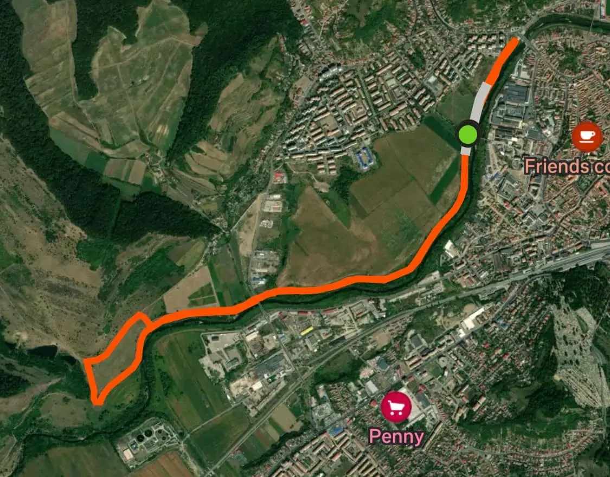
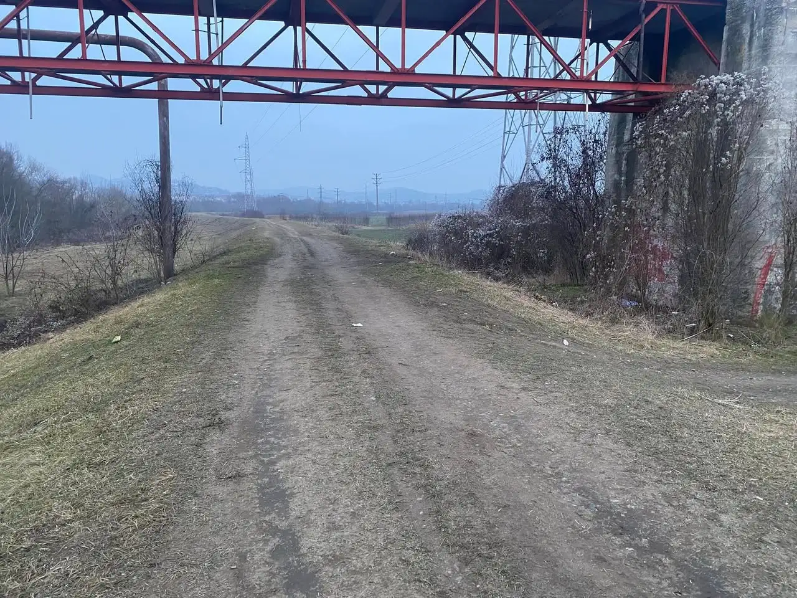
7.15 KM • TRAIL
Traseu #2
Distanță totală: 7,15 km
Diferență de nivel: +48 m Suprafață: 100% drum de
pământ Traseu pe dig: 90% Punct de plecare: Pasarela
Acest traseu de alergare începe de la Pasarela, un
punct de referință accesibil și bine cunoscut din zonă. Traseul
urmează în mare parte digul Târnavei Mari, oferind o experiență
autentică pe drumuri de pământ, într-un cadru natural liniștit și
pitoresc.
Caracteristici principale:
1. Suprafața traseului:
Întreg traseul se desfășoară pe drum de pământ, ideal pentru
alergătorii care doresc să evite suprafețele dure. Este perfect
pentru antrenamente de anduranță sau alergări relaxante.
2. Profilul traseului: Diferența pozitivă de nivel de 48 m
este ușor de gestionat, cu urcări blânde, ceea ce face traseul
potrivit pentru alergători de toate nivelurile. Ritmul poate fi
menținut constant pe toată lungimea traseului.
3. Digul Târnavei Mari: Aproximativ 90% din traseu urmează
digul râului, asigurând un parcurs clar și bine definit.
4. Întoarcerea: Traseul se poate închide sub formă de buclă
sau cu întoarcere pe aceeași rută, în funcție de preferințele
alergătorilor.
Recomandări:
• Echipament: Încălțămintea de trail este cea mai potrivită pentru
aderență optimă.
• Hidratare: Luați apă, deoarece traseul nu include puncte de
alimentare.
• Siguranță: După ploi, pot apărea porțiuni mai alunecoase pe dig,
de aceea este bine să aveți grijă la pași.
Concluzie:
Începând de la Pasarela, acest traseu pe digul Târnavei Mari este
ideal pentru o alergare relaxantă sau antrenamente constante,
oferind un echilibru între efort fizic și frumusețea naturii.
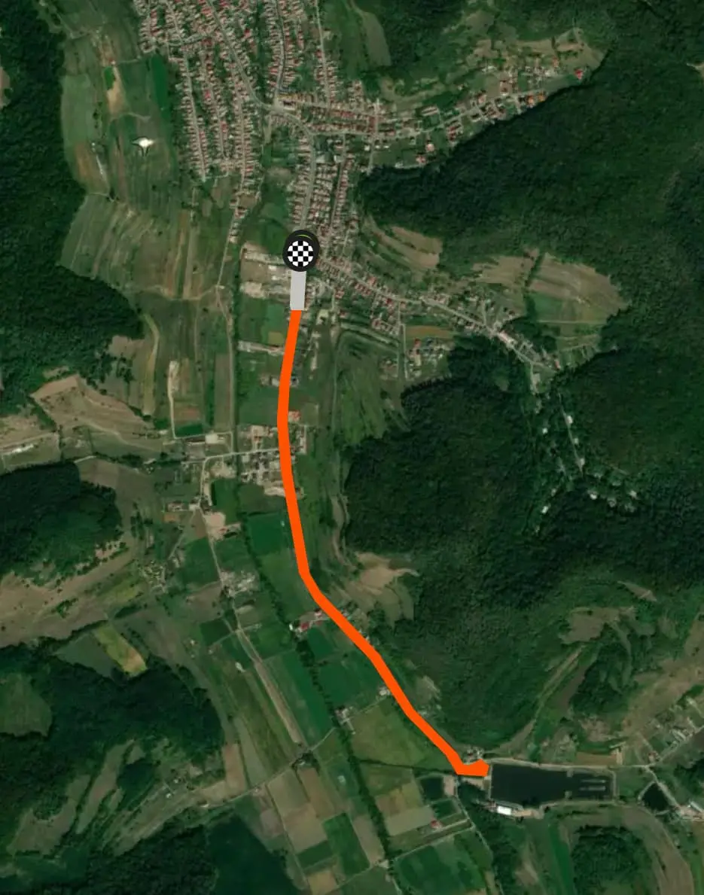
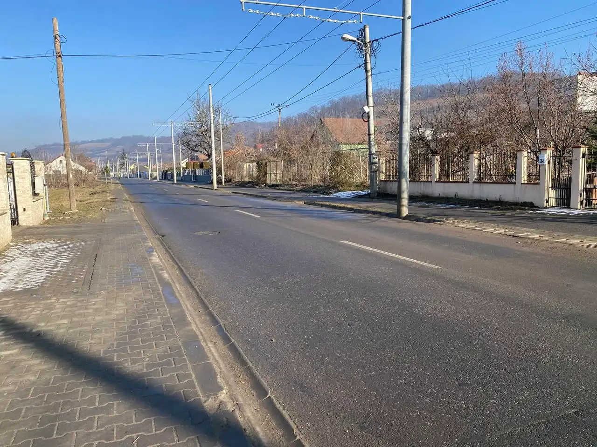
7.4 KM • ROAD
Traseu #3
Traseul constă în două ture identice de câte 3,7 km fiecare, cu
plecarea din parcarea magazinului Penny. Suprafața este complet
asfaltată (100% șosea) și urmează pista de biciclete care duce
către capătul liniei de troleibuz. Traseul este aproape plat, cu o
diferență de nivel de doar 28 m, ideal pentru alergători de toate
nivelurile.
Detalii traseu:
1. Startul:
• Startul se face din parcarea magazinului Penny. 2.
Prima secțiune (0 - 1,5 km): • Alergarea începe pe pista de
biciclete, urmând drumul asfaltat către Helesteu. •
Suprafața este netedă, fără obstacole, iar traficul este moderat.
3. Zona de întoarcere (1,5 - 3,7 km): • Se continuă
alergarea până în capătul liniei de troleibuz. • Aici, se
efectuează întoarcerea, traseul urmând aceeași pistă de biciclete
spre punctul de start. 4. A doua tură: • După ce se
încheie prima buclă de 3,7 km, se reia traseul pentru încă o tură
identică. 5. Sosirea: • Sosirea are loc tot în
parcarea magazinului Penny, după parcurgerea celor două ture.
Aspecte logistice:
• Hidratare: Asigurați-vă că aveți apă disponibilă în parcare,
deoarece traseul nu include puncte de hidratare.
• Siguranță: Traseul este pe drum asfaltat, asigurați-vă că
respectați regulile de circulație pe pista de biciclete. •
Ritm: Terenul aproape plat este ideal pentru menținerea unui ritm
constant sau pentru alergări de viteză.
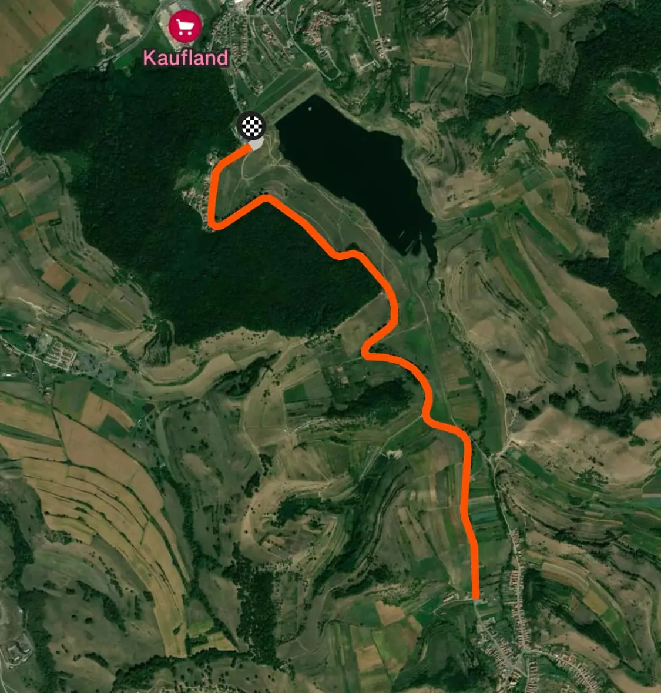
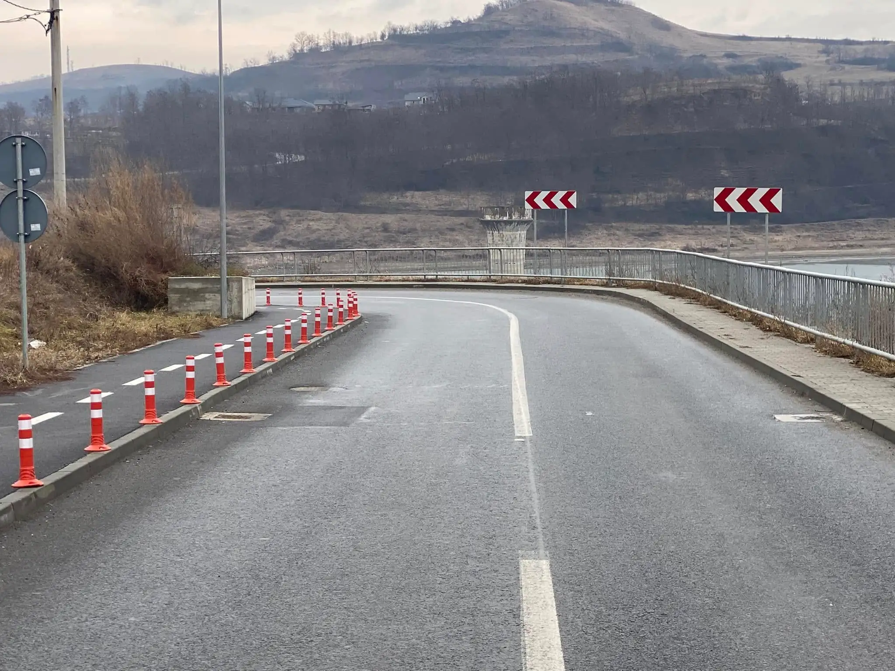
7.8 KM • ROAD
Traseu #4
Lungime traseu: 7,8 km (dus-întors)
Diferență de nivel: 73 m Suprafață: 100% asfalt
Dificultate: Ușor, potrivit pentru alergători de toate
nivelurile și practicabil pe orice vreme.
Detalii traseu:
• Punct de plecare și final: Parcarea Barajului Lacului Ighiș.
• Traseul: Traseul urmează pista de biciclete asfaltată,
având o lungime de aproximativ 3,9 km până la intrarea în
localitatea Ighiș, după care se revine pe același drum la punctul
de plecare. Traseul este caracterizat de o alternanță de urcări și
coborâri ușoare în ambele direcții, oferind un antrenament plăcut
și variat.
• Peisaj: Pista traversează o zonă cu multă verdeață, cu
peisaje naturale care oferă o atmosferă relaxantă. Este ideal
pentru alergători care doresc să se bucure de natură în timp ce se
antrenează.
• Lungime totală: 7,8 km (3,9 km dus + 3,9 km întors).
Recomandări:
• Potrivit pentru alergători începători și avansați, fie pentru
antrenamente ușoare, fie pentru sesiuni mai intense.
• Suprafața asfaltată și întreținerea bună fac traseul accesibil
în orice condiții meteorologice.
• Ritmul poate fi ajustat în funcție de nivelul de dificultate
dorit, iar peisajele naturale contribuie la menținerea motivației.
Acest traseu dus-întors este ideal pentru alergători
care caută o combinație între mișcare, relaxare și peisaje
plăcute.
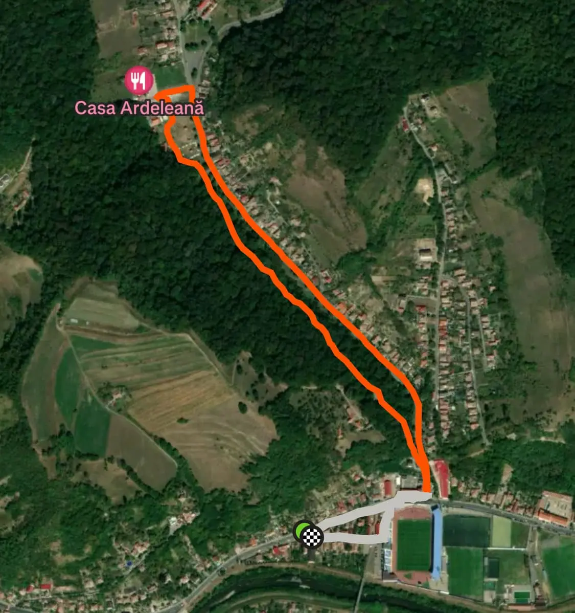
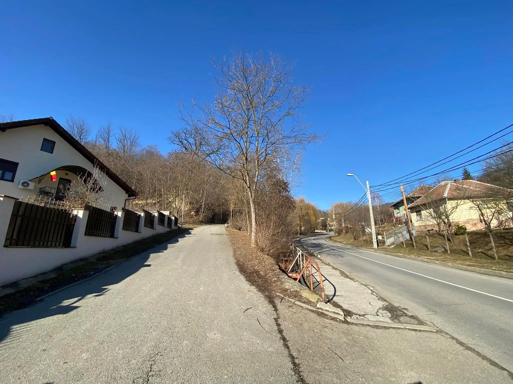
4.8 KM • ROAD
Traseu #5
Distanță totală: 7,15 km
Traseul Stadion-Greweln este un circuit de 4,8 km cu o
diferență de nivel de 100 m, potrivit pentru alergare sau
plimbare. Traseul este integral asfaltat și pe alei betonate,
fiind accesibil și ușor de parcurs.
Detalii traseu:
1. Punct de plecare: Strada Stadionului, în fața Clubului Sportiv
Delphine Mediaș.
2. Prima secțiune: Urcare pe aleea ce duce până la Hanul
Greweln. Această porțiune include mici pante care oferă un bun
antrenament. 3. A doua secțiune: Coborâre pe lângă șosea,
revenind spre stadion. 4. Circuit repetat: După completarea
primei bucle, circuitul se repetă o dată. 5. Finalizare
traseu: La finalul celei de-a doua bucle, întoarcerea se face la
punctul de plecare.
Peisaj:
Zona este frumoasă, cu păduri în apropiere care oferă umbră și un
cadru plăcut. Traseul include porțiuni ușor înclinate, perfecte
pentru un antrenament moderat. Este ideal atât pentru începători,
cât și pentru cei care doresc să se mențină activi într-un mediu
relaxant.
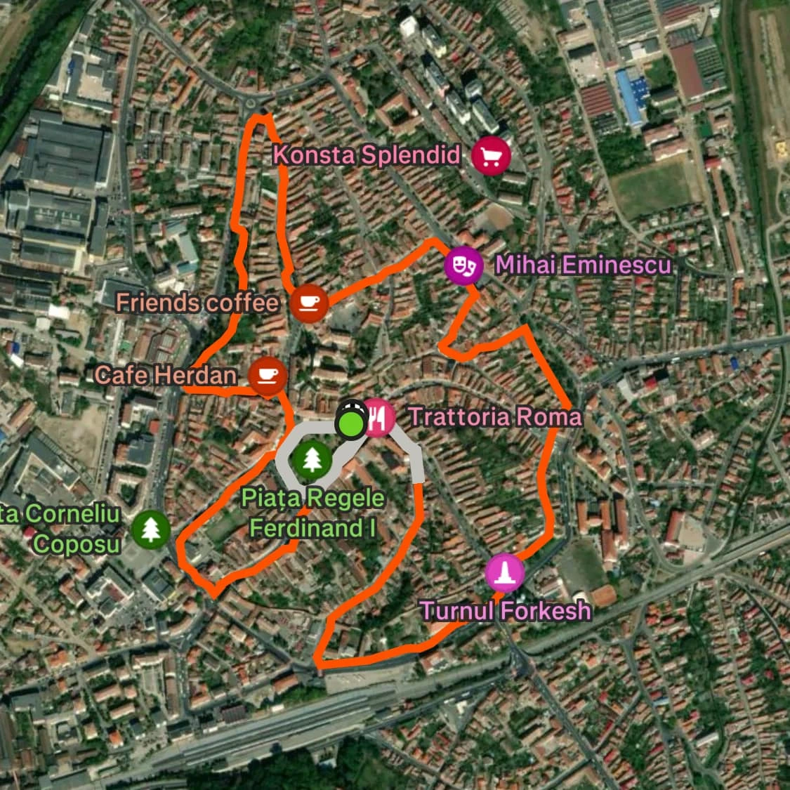
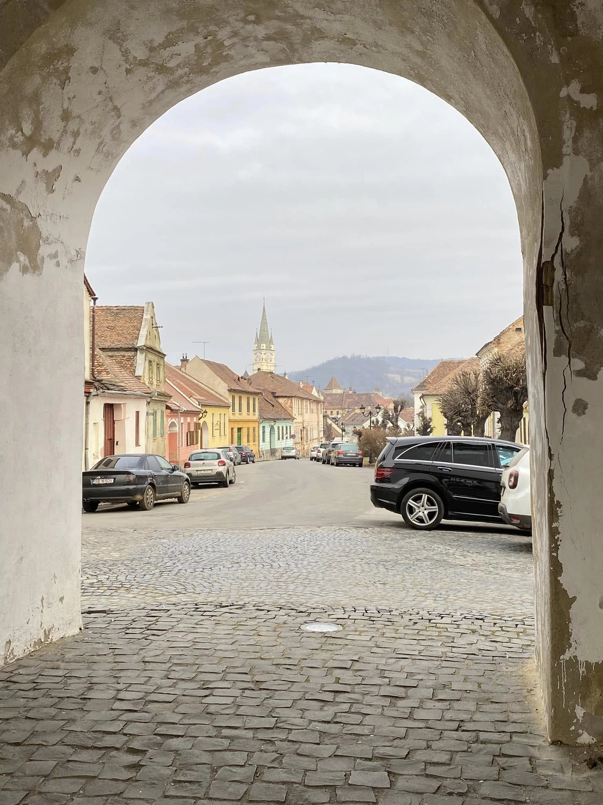
4.1 KM • ROAD
Traseu #6
Acest traseu de 4,1 km din Mediaș este ideal pentru alergare,
desfășurându-se pe drumuri asfaltate, pavaj din piatră cubică și
macadam, atât în interiorul, cât și de-a lungul zidurilor cetății.
Cu o diferență de nivel de doar 27 m, oferă un parcurs accesibil,
dar variat.
Startul și sosirea sunt în fața Casei Schuller, iar pe
traseu se pot admira fortificațiile medievale, turnurile de
apărare și clădirile istorice ale orașului. Alergarea prin acest
decor medieval adaugă o experiență aparte, combinând efortul fizic
cu farmecul arhitecturii și al străzilor încărcate de peste 750 de
ani de istorie.
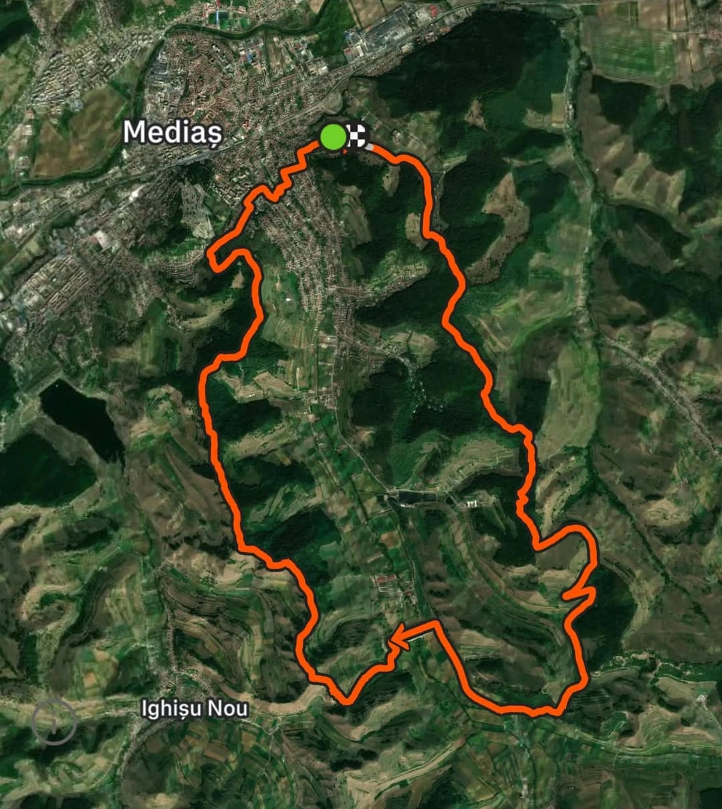
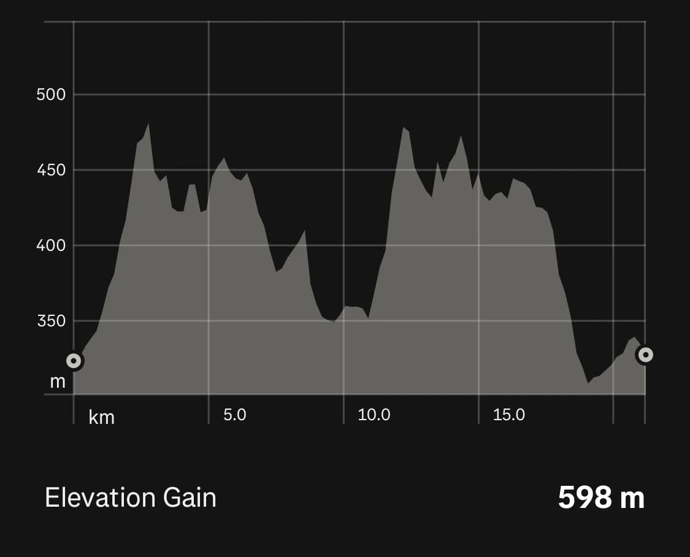
21 KM • MIXT
Traseu #7
Tip traseu: Mixt (80% drumuri de pământ, cărări; 20% asfalt)
Punct de start/finish: Hotel Mercure (Binderbubi)
Traseul începe în fața Hotelului Mercure și urcă pe
lângă Trei Stejari, ajungând pe Via Transilvanica. Se urmează
acest traseu până la drumul Mediaș – Nemșa, unde se face dreapta
către barajul de la Moșna.
După traversarea barajului,
se continuă cu o urcare susținută pe dealurile de deasupra
Ighișului. Traseul urmărește coama dealului, oferind priveliști
spectaculoase, până la intersecția Păcii – Tâmpa – Primăverii. De
aici, urmează o coborâre pe strada Primăverii, revenind apoi la
Hotel Mercure, punctul de start.
Caracteristici traseu:
• Primii kilometri includ o urcare constantă până pe Via
Transilvanica.
• Porțiunea de drum public Mediaș – Nemșa este relativ
ușoară, însă urcarea spre Ighiș poate fi solicitantă. •
Ultimii kilometri sunt predominant coborâre, oferind o revenire
mai rapidă către punctul de start.
Este un traseu
variat, cu peisaje frumoase și porțiuni tehnice, ideal pentru
alergători care caută o combinație între drumuri de pământ, pădure
și porțiuni de asfalt.